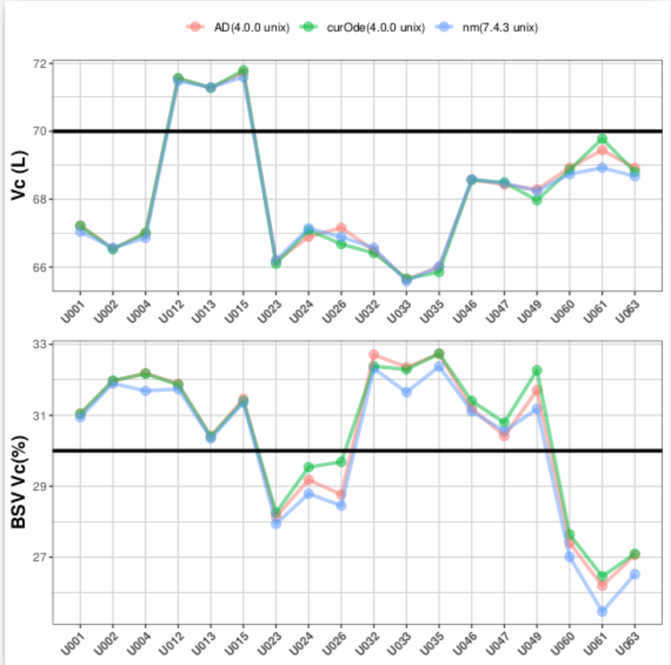
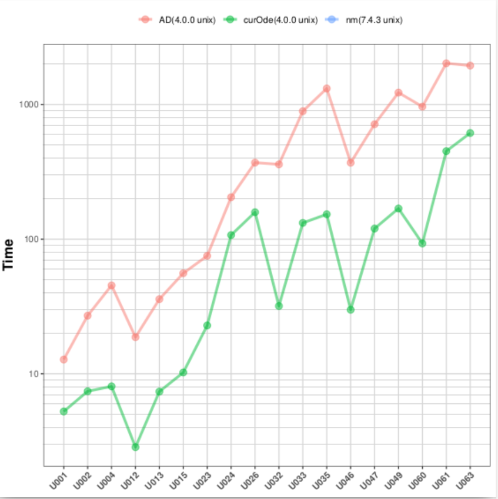
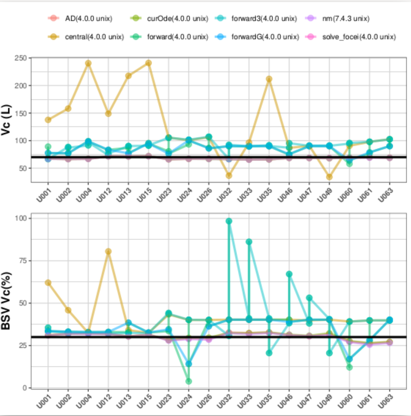
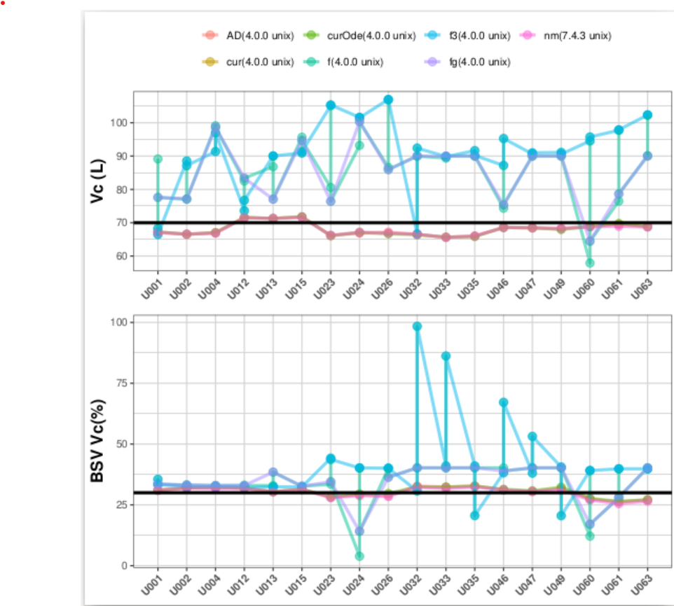
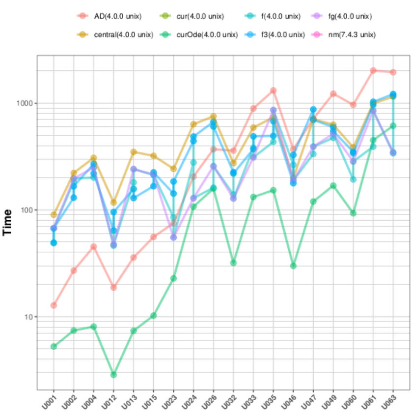
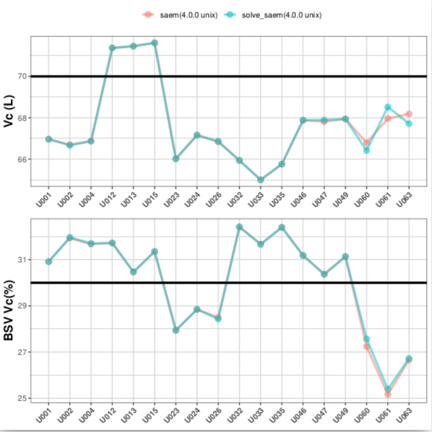
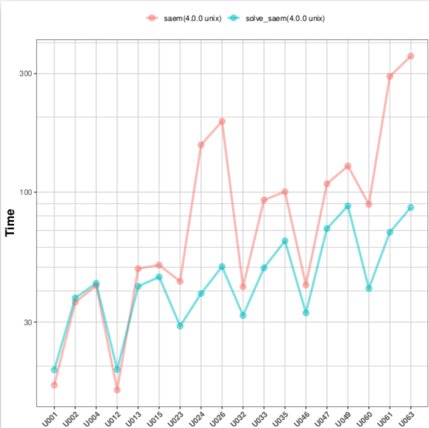

We at the nlmixr2 team are committed to quality results. This is
seen in line with our vision:
The vision of nlmixr2 is to develop a R-based open-source nonlinear mixed-effects modeling software package that can compete with commercial pharmacometric tools and is suitable for regulatory submissions.
This release furthers the quality by changing linear compartment models the ADVAN solutions to the WNL solutions. We also added a few new features to the linear compartment solutions too.
However, since this is a change to the type of linear compartment solutions, this is a breaking change so it is a new major release.
There are other features that may be of interest (you will see a
different loading with nlmixr2), but we will cover them at a later
time.
The ADVAN compartment solutions we were using are an excellent linear compartment solution that takes the last value of all the compartments solved to determine the next value of each compartment (i.e. not the super-positioning solutions I learned in graduate school). This should allow time-varying covariates to be used correctly in linear compartment solutions.
To ensure the accuracy of these results we had 5,662 tests related to
the linear compartment solutions in rxode2.
Even with these results, there were cases where the linear compartment solution did not seem to be performing well for optimization. Of course, this is concerning to us as a team and we set to fix this issue as soon as we found out.
Our hypothesis was that the strange results were due one of the following possibilities:
Floating point arithmetic error that added up over the many operations that were performed (especially when optimizing, when calculating the derivatives in automatic differentiation from STAN).
Some strange difference in event handling (since linear compartment events were handled differently than ODE events)
At the same time CRAN brought the following problems with the ADVAN linear compartment solutions to our attention:
With these issues, we decided to look for another linear compartment
solution for inclusion in rxode2 and nlmixr2est.
After some searching, we found the WNL linear compartment solutions, which also took the last solution of the compartments to solve the current concentrations (also allowing time-varying covariates). In addition to what was described in the paper, we modified this to allow:
Infusions into the depot compartment (as well as the central). The math derivation is included in the code
Exact steady state solutions (as derived by the ADVAN solutions, not included in their paper)
There are also other changes that you may observe:
Whenever a linear compartment solution is used i.e. cp <- linCmt(), you may access any of the compartments that would be
defined by the corresponding ODE by name, that is: depot,
central, peripheral1 and peripheral2 for use in your
model. (This is a breaking change if you used these names in your
model)
You can also dose the peripheral1 and peripharal2 compartment
(as long as those doses are not infusion doses).
Solving linCmt() is now threaded when solving with rxSolve() or
optimizing with "saem", meaning it may speed up your
solutions. (We found the AD from stan to cause R crashes with
threading, so "focei" and any other gradient methods will not be
run in parallel)
The AD gradients from Stan included in linCmt() will only
calculate based on the derivatives you need (i.e. if you only have
an eta on Cl in “focei”, only derivatives related to that
parameter will be calculated). This actually saves a little time if
you are not using a model with multiple etas.
Changes you may not see, but should help in stability
The linear compartment solutions are no longer separated into AD
derivatives and linear compartment solutions without
derivatives. They are defined by the exact same code and realized
with C++’s templates.
The event handling for rxode2 is no longer any different between
linear compartment solutions and ODEs.
More tests for the accuracy of the linear compartment solutions were added (from 5,662 to 15,850 tests).
focei testsThe focei routine has to figure out the linear compartment solution gradients. We tested the linear compartment solutions against the subset of linear comparment solutions found in our comparison paper.
In this release the default gradient method is the automatic differentiation of the linear compartment solutions from stan:

These solutions matched, which is great. However, they are slower than ODE solving with sensitivities.

Because of this, we tried many different type of finite differences, which give inaccurate results (especially the central difference):

Even removing the central difference, there is inaccurate results with the various types of finite differences:

While calculating one gradient is faster with numeric differentiation, the optimization is actually slower with this approach:

saem testsThe saem routine only uses the non-gradient solutions; We tested the linear compartment solutions against the subset of linear comparment solutions found in our comparison paper.
We will focus on the volume compartment comparison since all models have this in common:

You can see the solutions between ODEs and linear compartment solutions are almost identical.
Also the speed of linear compartment solutions in saem is faster
than the ode solution:

Unlike focei, I didn’t explore anything else since this is what I expected.